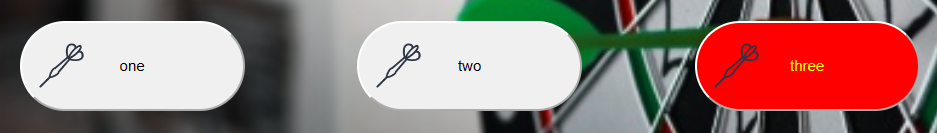
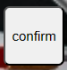
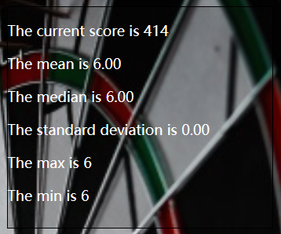
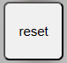
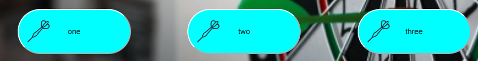
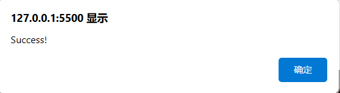
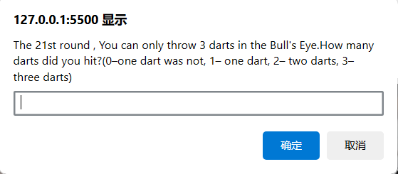
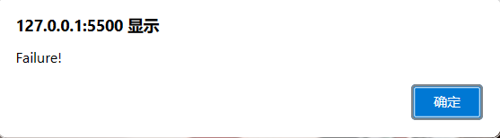
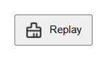

Before using the scoreboard, click on the User Manual icon, which is a hyperlink that will redirect to the current page.
The following form is used to select rounds, totaling one to twenty rounds. Users can select one round and go to the current selected round to modify data.
This is the area that displays the current number of rounds, and the number of rounds will be displayed.
This area mainly displays the current score, mean, median, standard deviation, maximum and minimum values of the current score.
In order to enhance the user experience and facilitate user operation, we have added two buttons, which can be clicked to go back to the previous round and enter the next round.
(1)Firstly, these three buttons represent winning one dart, two darts, and three darts respectively. When we select a button, it will turn red, as shown in the following figure:
(2)Subsequently, we need to click the confirm button, and the corresponding data will be displayed on the scoreboard.
 (3)If we choose the wrong number of darts, we can click the reset button, which will reset the data of the current round, restore the scoreboard to the previous data, and then we can reselect the number of darts we have won.
(4)Especially, if none of the darts hit, we can simply click the confirm button. At this point, the three dart count buttons will turn blue, indicating that one dart did not hit in the current round and we will receive zero points.
If 420 points are reduced to less than or equal to 0 within 20 rounds, the game is successful.
If this goal is not achieved within 20 rounds, proceed to the 21st round and can only shoot at the center, scoring 50 points per dart. At this point, the user will be prompted to enter the number of darts in the 21st round. 0 represents missing one dart, 1 represents missing one dart, 2 represents missing two darts, and 3 represents missing three darts.
When a number is entered, if the current score reaches the target, the game is successful; if the target is not achieved, the game fails.
We have implemented local storage, and all data will be stored in the browser. When this button is clicked, all data will be clear.Then start a new round.
